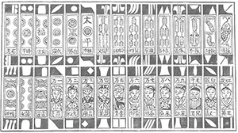
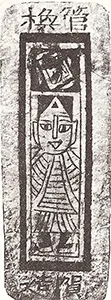
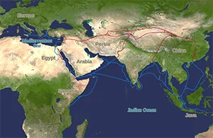
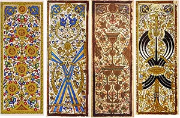
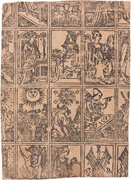
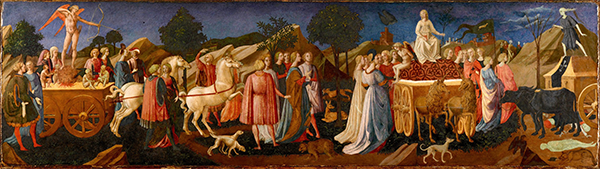

International playing-card society historical tech archives, Tang dynasty imperial court chronicles, and mediterranean silk trade customs manifests.
Tang Dynasty China (9th Century CE): The "Leaf Game"
Long before Renaissance nobility commissioned painted Italian decks, the physical medium of playing cards was invented in China.

A woodblock print of a traditional deck of Water Margin cards (水浒牌 / Shuihu Pai) from Yangjiabu in Weifang, Shandong. These narrow, money-suited paper strips are direct precursors to modern Mahjong tiles. The top row features stylized geometric suit symbols, while the bottom row depicts named portraits of legendary outlaws—including the supreme leader Song Jiang (written right-to-left as 'Jiang Song') and the hot-tempered warrior Li Kui—from the classic Chinese novel, The Water Margin.
The Innovation: The earliest credible references to card play appear in late Tang Dynasty texts. In 868 CE, documents describe Princess Tongchang playing a "leaf game" (yezi xi) with members of the royal clan.
The Materiality: Modeled after early paper currency, these paper "leaves" were manufactured using primitive woodblock printing. They evolved into "money cards" featuring suits representing single coins, strings of cash, and multiples of currency.

A woodcut printed Chinese playing card found near Turpan (or Turfan) (吐鲁番市), Xinjiang autonomus region, China, dated c. 1400 AD during the Ming Dynasty. From the Museum fur Volkerkunde, Berlin. Its dimensions are 9.5 cm by 3.5 cm.
The Transcontinental Journey to Europe
The deck of cards did not materialize out of thin air in Italy. It migrated slowly across continents over several centuries:

A map showcasing the overland (red) and maritime (blue) networks of the Silk Road that connected East Asia to the Mediterranean.
The Silk Road: Chinese card game variants traveled westward along major trade networks through India and Persia.
The Mamluk Sultanate (13th Century): Islamic merchants in Egypt refined the system into highly structured 52-card decks. These decks used complex geometric and calligraphic designs (due to Islamic religious prohibitions on depicting human forms) and featured four suits: Polo Sticks, Coins, Swords, and Cups.

Surviving Mamluk kanjifah cards showing the highly stylized suits of Coins, Polo Sticks, Cups, and Swords, strictly adhering to non-iconic geometric patterns.
The European Arrival (1370s): Trade and military interaction brought these Egyptian cards to European ports like Venice and Barcelona. Within decades, local card makers adapted these shapes into the standard Italian suits that laid the groundwork for Tarocchi.

An early Italian woodcut printing sheet from circa 1500, showing the adaptation of original Islamic suits into traditional Italian Batons, Swords, Cups, and Coins.
Petrarch’s Triumphs and the Major Arcana
Francesco Petrarch’s 14th-century allegorical poem, I Trionfi ("The Triumphs"), and 15th-century northern Italian court records documenting early Carte da Trionfi card games.
The Renaissance Allegory

Francesco Pesellino's The Triumphs of Love, Chastity and Death (c. 1450), tempera and gold on panel. This cassone panel serves as a continuous narrative illustrating Petrarch's poetry. The composition progresses logically across a shared landscape, moving from the chaotic passion of Love on the left, to the orderly restraint of Chastity conquering Cupid in the center, and concluding with the grim reminder of Death trampling human life on the right.
TO DO
Francesco Pesellino's The Triumphs of Fame, Time and Eternity (c. 1450), tempera and gold on panel. The continuous landscape acts as a stage for three distinct narrative units based on Petrarch's poetry. The composition flows sequentially from the crowded human realm of historical memory on the left, through the natural progression and decay represented by Time in the center, and culminates in a vertical, tiered vision of the divine cosmos on the right.
The Hierarchical Alignment
Here is how Petrarch's six poetic triumphs map directly to the historical imagery of the early Italian decks:
The Triumph of Love (Amor)
The Master of Petrarch's Triumphs, 'The Triumph of Love' (c. 1503), illumination on parchment from Ms. fr. 594, Bibliothèque nationale de France. The layout utilizes a continuous horizontal panorama across the book's gutter. It captures Petrarch's poetic description of Cupid's fiery, horse-drawn chariot dominating the left frame, while a densely populated group of historical and mythological figures enslaved by love occupies the right canvas.
Meaning: Represents youth, earthly desire, and instinct.
Tarocchi Parallel: The Lovers card.
The Triumph of Chastity (Pudor)
The Master of Petrarch's Triumphs, 'The Triumph of Chastity' (c. 1503), illumination on parchment from Ms. fr. 594, Bibliothèque nationale de France. This intricate French Renaissance layout balances dense crowd compositions with localized architectural depth. The illumination captures the exact narrative moment where the blindfolded Cupid on the left page is led away as a captive of the white-clad personification of Chastity, whose chariot is pulled by pure white unicorns on the right page.
Meaning: Virtue, restraint, and mental control triumph over base desire.
Tarocchi Parallel: The Temperance card.
The Triumph of Death (Mors)
The Master of Petrarch's Triumphs, 'The Triumph of Death' (c. 1503), illumination on parchment from Ms. fr. 594, Bibliothèque nationale de France. The layout juxtaposes the vibrant, orderly procession of Chastity's court on the left page with the sudden, chaotic destruction of the human elite on the right page. A skeletal personification of Death commands the composition from atop a large blue wagon pulled by dark oxen, slicing through the mortal crowd with a large scythe.
Meaning: The great equalizer that conquers all mortal achievements and social status.
Tarocchi Parallel: The Death card (historically depicting popes and emperors trapped beneath the horse's hooves).
The Triumph of Fame (Fama)
The Master of Petrarch's Triumphs, 'The Triumph of Fame' (c. 1503), illumination on parchment from Ms. fr. 594, Bibliothèque nationale de France. The composition signals the narrative reversal of the previous scene. Death's blue chariot is relegated to the background of the left folio, while the right folio is visually commanded by the monumental, winged figure of Fame trumpeting historical immortality from atop a caparisoned white horse.
Meaning: Memory, legacy, and good deeds outlast physical mortality.
Tarocchi Parallel: The Judgment card, calling forth historical memory.
The Triumph of Time (Tempus)
The Master of Petrarch's Triumphs, 'The Triumph of Time' (c. 1503), illumination on parchment from Ms. fr. 594, Bibliothèque nationale de France. The layout brilliantly integrates cosmological symbolism with narrative movement. The terrestrial procession of Fame on the left yields to Time's cosmic chariot on the right, which features an armillary sphere. An overarching celestial band of zodiac signs unites both folios under a starry sky, highlighting the inevitable march of time over human achievement.
Meaning: Time eventually erodes all earthly fame, rendering human monuments to dust.
Tarocchi Parallel: The Hermit card (originally called "Il Tempo" / Time, frequently carrying an hourglass).
The Triumph of Eternity (Eternitas)
The Master of Petrarch's Triumphs, 'The Triumph of Eternity' (c. 1503), illumination on parchment from Ms. fr. 594, Bibliothèque nationale de France. This final layout represents the ultimate resolution of the cycle. Time's worldly chariot descends into darkness on the left folio, while the right folio elevates the viewer to the celestial plane. Here, a floating triumphal wagon carries the ecclesiastical and royal elect beneath the enthroned Divine Presence, who is surrounded by a fiery seraphic mandorla, symbolizing the victory of timeless eternity over mortal history.
Meaning: The ultimate awakening, rising above the material world into permanent divine order.
Tarocchi Parallel: The World card.
Medieval Archetypes and The Fool’s Journey
Geoffrey Chaucer’s 14th-century middle English literary masterpiece, the canterbury tales, paired with 20th-century mythic storytelling frameworks regarding universal human paths.
The Framework Narrative
Before modern psychology defined archetypes, medieval literature used them to explore the human condition. A prime example is Geoffrey Chaucer’s 14th-century masterpiece, The Canterbury Tales. Chaucer utilizes a classic framework narrative: a diverse group of pilgrims travel together on a spiritual journey, sharing stories that reveal their inner virtues, flaws, and motivations.
This mirrors the concept of The Fool’s Journey in tarot. The Major Arcana acts as a visual pilgrimage. The Fool (Card 0) is the ultimate, naive traveler who walks through the world, encountering distinct archetypal figures to gain wisdom and achieve spiritual completion.
Literary and Tarot Archetype Parallels
Here are some examples of how Chaucer's pilgrims align with the Major Arcana:
The Knight and The Chariot
A bearded man with a stern, disciplined expression sits upright on a prancing brown horse. He wears a dark, draped tunic with wide sleeves over chainmail armor and dark leggings. On his head is a distinctive, padded red hood or chaperon hat. His right hand is raised in a formal, authoritative gesture, while his left hand holds the horse's reins.
The Canterbury Pilgrim: The Knight represents the peak of medieval chivalry, discipline, honor, and military order. He is driven by duty and a strict moral code.
The Tarot Connection: The Chariot. This archetype signifies willpower, focused ambition, victory, control over opposing forces, and the physical mastery of the material world.
The Prioress and The High Priestess
A refined, somber nun seated sidesaddle on a light brown horse. She is dressed completely in orthodox Benedictine attire, featuring a heavy black cloak and veil draped over a white wimple that frames her pale face. Her hands gently hold the reins, and a decorative gothic floral border circles above her.
The Canterbury Pilgrim: The Prioress is an educated, refined nun. While she is quiet and bound to her religious structure, she carries an air of courtly romance and hidden depth.
The Tarot Connection: The High Priestess. This archetype represents intuition, divine mystery, hidden knowledge, and a quiet retreat from the chaotic external world.
The Wife of Bath and The Empress
A wealthy, independently styled woman riding a light grey horse astride. She wears an oversized, flat-brimmed black traveler's hat over a white wimple. Her outfit consists of a bright orange-red jacket and a heavy, multi-layered blue riding skirt. She confidently brandishes a small riding whip in her right hand.
The Canterbury Pilgrim: Wealthy, fiercely independent, and five-times-married, the Wife of Bath is unapologetic about her earthly desires, sexual power, and love of life.
The Tarot Connection: The Empress. This archetype represents ultimate abundance, divine feminine power, maternal creation, and the sensory pleasures of nature and fertility.
The Parson and The Hierophant
A humble, unassuming country priest riding a dappled grey horse. He is dressed in a plain, unadorned crimson or rust-red tunic with a simple hood pulled over his head. His arms are meekly crossed over his chest in a gesture of deep piety, humility, and self-sacrifice. Fragmented black ink flourishes appear on the right margin.
The Canterbury Pilgrim: Unlike the corrupt clergy members on the trip, the Parson is a genuinely holy, self-sacrificing country priest who leads his flock by moral example.
The Tarot Connection: The Hierophant. This archetype represents traditional spiritual wisdom, formal education, orthodox religious guidance, and institutionalized morality.
The Pardoner and The Devil
A long-haired church official riding a dark brown horse. He wears a prominent red coat and a matching red hat adorned with a white vernicle (Saint Veronica's veil) badge. In his right hand, he proudly holds aloft a golden reliquary cross, displaying his fake relics to the other pilgrims. Scurrilous handwritten gothic text frames the top left background.
The Canterbury Pilgrim: The Pardoner is a manipulative church official who sells fake religious relics and official "pardons" for sins, driven entirely by greed and exploitation.
The Tarot Connection: The Devil. This archetype signifies spiritual deception, being chained to material greed, manipulation, and the toxic illusions that trap the human soul.